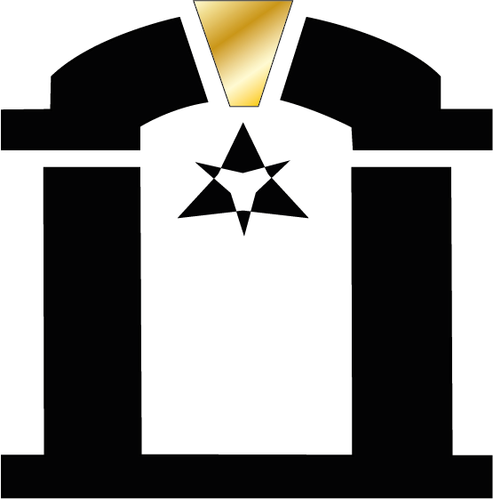
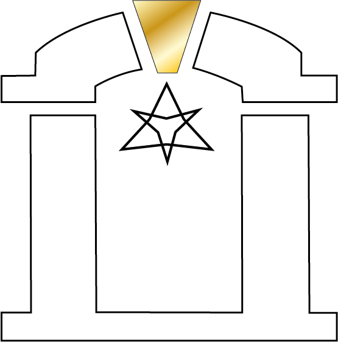

Base operativa: Zaragoza | ejecución en toda España
Consultoría de inteligencia artificial en Zaragoza para empresas que necesitan sistema. No más herramientas sueltas.
Archon Consultancies diseña sistemas de IA y automatización para empresas que ya venden, ya tienen complejidad y ya notan el coste de operar con memoria humana, parches y fricción. Entramos como consultoría de IA para empresas para dar orden, criterio y una secuencia comprable.
Presencial en Zaragoza
Roadmap inicial en 72h
Sin humo ni capas innecesarias
Conectamos datos, reglas y decisiones para que la operativa deje de depender de memoria y heroicidades.
Automatizamos validaciones, handoffs y seguimiento para recuperar horas y bajar latencia de reacción.
Diseñamos infraestructura que aguanta más volumen sin convertir cada semana en un incendio nuevo.
Si hay encaje, devolvemos una dirección clara y un orden de implantación rápido.
Datos, automatización e IA con supervisión. Ni más ni menos de lo que hace falta.
Base en Zaragoza para trabajar cerca cuando la operativa lo pide.
La meta es que el negocio reaccione con sistema, no con cansancio humano.
Rutas de entrada
Tres puertas de entrada. Una misma tesis.
Si vienes buscando consultoría de IA para empresas, una agencia de IA en Zaragoza o automatización de procesos con IA, la promesa es la misma: menos fricción, mejor criterio y una operativa que no se cae cuando sube el volumen. Cambia la puerta de entrada, no la tesis de valor.
Consultoría de IA
Para empresas que necesitan ordenar prioridades, detectar fugas operativas y decidir qué automatizar primero sin comprar más ruido.
Ver consultoría de IA para empresas Consultora de IA en ZaragozaAgencia de IA
Para equipos que ya quieren pasar a ejecución: integraciones, agentes, flujos y control de extremo a extremo.
Ver agencia de IA en Zaragoza Integrar IA en CRM y ERPAutomatización con IA
Para negocios con cuello de botella en ventas, soporte o backoffice y necesidad de reaccionar más rápido con menos carga manual.
Ver automatización de procesos con IA Automatización con n8n para empresasEl problema
Las empresas no se frenan por falta de ganas. Se frenan por fricción.
Pedidos, aprobaciones, seguimientos, incidencias, correcciones y datos repartidos. El coste no siempre se ve en una factura. Se ve en retrasos, decisiones lentas y equipos que hacen de pegamento humano.

01
Trabajo manual oculto
Revisar, copiar, validar y perseguir información consume horas buenas sin parecer un problema gigante hasta que miras el coste total.
02
Herramientas sin cerebro
Shopify, email, ERP, CRM, WhatsApp o hojas sueltas. Todo existe, pero ninguna pieza gobierna el flujo completo.
03
Dependencia de personas clave
Si una persona se satura o falta, la operativa pierde memoria. Eso no es resiliencia. Es fragilidad estructural.
04
Reacción tardía
Los fallos se detectan cuando ya han costado dinero, reputación o equipo. Y entonces toca apagar fuegos con más improvisación.
La solución
Archon instala un Digital Brain operativo
No es una web bonita ni un prompt pegado con cinta. Es una capa que observa lo que ocurre, decide con contexto y activa la siguiente acción correcta con supervisión humana donde toca.

Fuente única de verdad
Pedidos, clientes, estados, incidencias y señales operativas salen del caos de paneles y hojas desconectadas.
Raíles de automatización
Las acciones repetitivas se ejecutan con reglas, disparadores y trazabilidad, no a golpe de memoria o urgencia.
IA con criterio
Clasificar, priorizar, resumir, validar y preparar respuestas útiles donde la IA ahorra tiempo de verdad.
Supervisión y control
Dashboards, alertas y reglas de excepción para que el sistema no sea una caja negra ni un riesgo operativo.
Sectores
La misma arquitectura. Diferente cuello de botella.
No vendemos soluciones genéricas. Cambia el sector, cambia la fricción. Por eso la auditoría empieza por entender dónde se rompen las cosas en tu caso y no en una presentación de PowerPoint.
Lectura local
Si vendes online desde Zaragoza, la fricción aparece cuando ventas y operaciones dejan de ir al mismo ritmo.
Tu stack puede ser bueno. El problema es la distancia entre herramienta y acción. Cuando una validación, una incidencia o una notificación tarda más de lo que debería, el negocio pierde margen y claridad.
Punto 01
Entrada limpia del pedido y su contexto.
Punto 02
Reglas para pagos, stock, fraude o excepciones.
Punto 03
Notificaciones y soporte con información consistente.
Resultado esperado
Menos tiempo persiguiendo estados, menos incidencias sin dueño y una operativa que soporta más volumen sin añadir desorden.
Lo que suele pasar
No necesitas automatizarlo todo. Necesitas automatizar la parte correcta.
Hay empresas que necesitan un radar y otras que ya necesitan construcción. Archon trabaja con una secuencia simple: detectar fuga, ordenar el flujo, poner raíles y después añadir IA donde multiplica criterio y velocidad.
Mapear el punto exacto donde las incidencias entran sin estructura y obligan a reaccionar tarde.
Herramientas nuevas antes de tener un flujo de decisiones claro.
Proceso Archon
No empezamos por herramientas. Empezamos por secuencia.
La venta de verdad no está en decirte que la IA puede hacer mil cosas. Está en marcar un orden inteligente para que empieces por el punto donde el retorno y el control son más reales.
Fase 01
Radar de fricción operativa
Revisamos proceso, herramientas, personas clave, excepciones y bloqueos. La idea no es impresionarte, sino decidir si conviene construir algo, empezar por una automatización concreta o no tocar nada todavía.
Mapa de puntos de fricción y latencia.
Hipótesis de ahorro, riesgo y orden de prioridad.
Decisión clara sobre el siguiente paso.
Modelo Archon
No vendemos IA en abstracto. Vendemos una secuencia para decidir bien.
La mayoría de empresas no necesitan comprar un sistema completo en la primera llamada. Necesitan una entrada clara, un diagnóstico serio si compensa, una forma premium de ejecutar si toca construir y una continuidad mensual si el sistema ya existe.
De entrada a continuidad
Primero una lectura. Después una decisión. Luego un sistema.
Archon gana claridad y el cliente también. La secuencia es simple: primero una auditoría gratuita de 33 minutos para detectar si hay retorno real, luego una Radiografía Pro si merece la pena profundizar, después proyecto por hitos si toca construir, retainer mensual si conviene mantener y packs verticales si prefieres entrar por una puerta concreta. Así la venta deja de ser difusa y el cliente sabe exactamente qué compra en cada nivel.
No todo lead tiene que comprar un sistema entero. La auditoría gratuita filtra sin fricción, eleva confianza y evita propuestas antes de tiempo.
La Radiografía Pro convierte el conocimiento inicial en un entregable real: mapa, prioridades, riesgos, foco comercial y siguiente paso.
Cuando el sistema ya existe, el negocio mejora más si no se abandona. Ahí entra el retainer mensual y el trabajo por capas para sostener rendimiento.
Radiografía gratuita de 33 min
0 EURSin compromiso
La puerta de entrada. Revisamos el contexto, decidimos si hay retorno real y te decimos claro si conviene avanzar, esperar o no tocar nada todavía.
Reservar auditoríaRadiografía Pro
250 EUREntregable en 72 h
Mapa de fricción, lectura del stack, prioridades, riesgo y plan de 30/60/90 días. Aquí ya compras claridad operativa, no una llamada.
Ver inversiónProyecto por Hitos Archon
Desde 950 EURDesde 2.500 EUR si el sistema es completo
Cuando toca construir, se hace por fases, validación y entregables claros. Así el proyecto se puede leer, aprobar y escalar sin humo.
Ver Hitos ArchonRetainer mensual
Desde 350 EURPor mes
Monitorización, ajustes, QA, soporte y mejora continua. El objetivo no es solo implantar, sino que el sistema siga dando control con el tiempo.
Ver retainerPacks verticales
Desde 333 EURPuertas de entrada concretas
Si prefieres comprar un paquete claro, puedes entrar por web, ecommerce, servicios o cerebro operativo completo sin pasar por una propuesta difusa.
Ver packsPrimero criterio. Luego profundidad. Después continuidad.
Esta secuencia no obliga a comprarlo todo. Permite entrar por el nivel correcto según el momento real del negocio.
- Si solo necesitas lectura rápida, te quedas en la auditoría gratuita.
- Si necesitas claridad seria, compras Radiografía Pro.
- Si toca construir, pasas a Hitos Archon.
- Si el sistema ya existe, activas continuidad mensual.
Así debería moverse una empresa normal.
No todo negocio está listo para automatizarlo todo. Por eso el orden importa tanto como la tecnología.
- 33 min gratis para decidir si hay retorno o no.
- Radiografía Pro para convertir intuición en plan.
- Proyecto por hitos si la capa merece construirse.
- Retainer si quieres que el sistema no se oxide.
- Packs si quieres comprar una solución ya enmarcada.
Hitos Archon
Proyectos protegidos por fases, validación y criterio.
Hitos Archon es nuestra forma de estructurar proyectos complejos sin ruido, sin entregas difusas y sin promesas infladas. Cada fase se define, se ejecuta, se valida y solo entonces se abre la siguiente.
Arquitectura por hitos
Menos promesa. Más estructura.
Si un proyecto de automatización, consultoría o web se ejecuta por hitos, hay menos ambigüedad, más control y una secuencia de trabajo mucho más limpia. No hablamos de custodiar dinero ni de vender un escrow casero. Hablamos de ordenar entregables, aprobación y continuidad con una lógica operativa seria.
Definimos el marco
Objetivos, entregables, dependencias, criterios de aceptación y secuencia de trabajo. El proyecto empieza por claridad, no por entusiasmo.
Partimos en fases
Cada tramo tiene coste, plazo, salida esperada y condición de validación. Así evitamos semanas enteras moviéndose en abstracto.
Validas cada entrega
No se avanza a la siguiente capa hasta que la anterior se ha leído, revisado y aceptado con criterio claro.
Solo se abre lo siguiente si toca
El proyecto gana ritmo, pero también puntos de control. Eso protege al cliente, al trabajo y a la ejecución.
El proyecto se puede leer.
En Hitos Archon, cada fase tiene estado visible y lenguaje simple. No hay entregas “casi acabadas” ni promesas flotando entre reuniones.
Pendiente
El alcance está definido, el hito existe y la fase aún no ha arrancado.
En ejecución
El trabajo está en marcha y tiene una salida concreta prevista.
En revisión
El entregable ya está sobre la mesa y toca validarlo con criterios visibles.
Aprobado
La fase se considera cerrada y el siguiente tramo puede abrirse.
Bloqueado
Hay un cambio de alcance, dependencia externa o decisión pendiente que impide avanzar.
Ejemplo de secuencia
Así podría verse un proyecto real con Archon.
La lógica sirve tanto para una automatización completa como para una web profesional, un blueprint operativo o una consultoría con ejecución posterior.
Hito 01
Radiografía
Mapa de fricción, lectura de stack, responsables, latencias y puntos donde el sistema hoy depende de intervención manual.
Hito 02
Blueprint
Arquitectura del flujo, herramientas, automatizaciones, reglas, supervisión y orden real de implantación.
Hito 03
Implementación
Construcción del tramo acordado, conexión de piezas y validación del comportamiento esperado.
Hito 04
QA y entrega
Revisión, ajuste fino, documentación mínima y cierre formal del hito antes del siguiente paso.
Hito 05
Mantenimiento
Si compensa, el sistema entra en mejora continua, soporte y control de calidad operativo.
Protege al cliente
Hay menos ambigüedad, menos promesas elásticas y más entregables verificables en cada fase del proyecto.
Protege la ejecución
La secuencia obliga a cerrar una capa antes de abrir la siguiente. Eso reduce caos, retrabajo y expectativas cruzadas.
Protege el sistema
El proyecto se vuelve trazable: se puede leer qué está hecho, qué falta, qué está aprobado y qué está bloqueado.
Todo acuerdo por hitos debería dejar esto por escrito.
Hitos Archon funciona cuando la arquitectura comercial es tan clara como la técnica. Por eso cada proyecto por fases debería fijar estas piezas desde el inicio.
Alcance real del proyecto y límites de fase.
Entregables por hito y criterio de aceptación.
Plazo estimado y dependencias relevantes.
Momento de revisión y salida de cada tramo.
Condición para abrir la siguiente fase o cerrar el proyecto.
Si quieres trabajar con menos humo y más estructura, se puede hacer por hitos.
Esto encaja especialmente bien cuando el proyecto tiene varias capas: auditoría, diseño, implementación, QA y mantenimiento. Si prefieres claridad, control y validación por fases, lo estructuramos así desde el principio.
Base local
Desde Zaragoza. Con cabeza de sistema.
Si estás en Zaragoza o en Aragón, podemos trabajar en una lectura más cercana del negocio. Si no, operamos perfectamente en remoto con equipos de toda España. El valor no es la videollamada: es la arquitectura que queda después de una consultoría de inteligencia artificial bien planteada.
Para quién encaja
Pymes, ecommerce y equipos operativos que ya no quieren sostener su crecimiento con heroísmo.
Archon encaja especialmente bien cuando ya existe negocio, hay fricción real y alguien del equipo está absorbiendo demasiada complejidad operativa porque el sistema todavía no gobierna el flujo.
Sesiones de discovery y auditoría con contexto local cuando conviene sentarse delante del proceso real.
La construcción se puede ejecutar desde cualquier parte de España con la misma disciplina si el flujo y las fuentes están claros.
No hacemos IA por moda. Trabajamos donde ventas, soporte, cobros u operaciones tienen una fuga concreta y medible.
Simulador ROI
Ponle una cifra a tu fuga operativa
Este simulador no sustituye una auditoría seria, pero sirve para ver en minutos si el coste oculto ya justifica moverse. Cambia el sector, mueve los parámetros y mira cómo cambia el impacto.
Parámetros
Radiografía express para empresas con fricción real
Tomamos actividad mensual, carga manual e incidencias que obligan a intervenir. Con eso estimamos tiempo tragado, coste repetido y potencial de recuperación.
Pedidos, tickets, expedientes, validaciones o tareas recurrentes que pasan por manos humanas.
Tiempo invertido entre revisar, copiar, confirmar, perseguir o corregir.
Coste aproximado del tiempo operativo, directivo o de soporte absorbido por esa fricción.
Errores, excepciones o casos que obligan a intervenir fuera del flujo normal.
Impacto estimado
8.112 EUR
Con este escenario, una parte importante del margen se va en tiempo operativo y excepciones que un sistema bien diseñado puede absorber o recortar.
676 EUR / mes
42 h recuperables / mes
Prioridad: flujo de incidencias
Urgencia alta
Encaje
Cuando sí. Cuando no.
Una buena web de marketing también filtra. No todo negocio necesita una capa Archon ahora mismo. Si no hay fricción real o no hay voluntad de ordenar el proceso, lo más honesto es no avanzar.
Negocio con volumen, fricción y necesidad de criterio
Ya existe actividad suficiente para que el trabajo manual se note en coste, tiempo o errores.
El equipo quiere control, no solo más herramientas.
Hay ganas de implantar una secuencia clara y medir lo que se mueve.
El fundador quiere salir de la microgestión operativa.
Negocio sin flujo todavía o buscando magia rápida
La operativa aún es demasiado pequeña para justificar una capa adicional.
Se busca una solución de IA solo por imagen o moda.
No existe voluntad de revisar procesos, responsables y reglas.
Se quiere automatizar antes de ordenar la fuente de verdad.
Editorial
La web ya no termina en la home. Ahora también tiene firma.
Aquí vive la parte editorial de Archon: la empresa, el fundador, el blog y una grieta deliberada llamada 33. Sirve para vender mejor, posicionar mejor y dejar claro quién firma lo que dice.
Blog Archon
Ideas sobre IA, automatización, ecommerce, operaciones y criterio de negocio firmadas por Pablo Alcocer Hurtado, PAH y Archon.
Ir al blogSobre Archon
La historia del proyecto, su misión, su enfoque y por qué la auditoría de 33 minutos es la primera puerta de entrada.
Leer la historiaPablo Alcocer Hurtado
Perfil público de PAH, GADU y la lógica personal detrás de Archon Consultancies.
Ver perfil33
Un ensayo aparte sobre masonería, simbolismo oculto y arquetipos de Jung para lectores que sepan encontrar la grieta.
Abrir 33Inversión
Precios claros. Sin letra pequeña.
La idea no es empujarte a un sistema completo desde el primer minuto. La idea es que veas con claridad por dónde se entra, qué cuesta profundizar, cuánto valen las capas de ejecución y cómo se sostiene la continuidad si compensa.
Puerta de entrada
Radiografía gratuita de 33 minutos
La primera conversación no se cobra. Sirve para detectar si existe fricción real, si hay retorno suficiente y si merece la pena pasar a una Radiografía Pro o ir directamente a proyecto por hitos. Es una puerta de entrada diseñada para bajar riesgo, no para venderte a ciegas.
0 EUR
Filtro inicial · Sin compromiso
Diagnóstico de pago
Radiografía Pro
250 EUR
Pago único
Mapa de fricciones, cuellos de botella identificados, prioridades, lectura del stack y hoja de ruta priorizada de automatización. Entregable en 72 horas.
Implementación express
Setup Logística Express
950 EUR
Pago único
Automatizaciones en el núcleo logístico de tu empresa. Integración con tu stack actual. Resultado operativo en 2–3 semanas.
Presencia digital
Página Web Completa + Hosting
333 EUR
Pago único · Sin cuota mensual
Diseño y desarrollo completo con hosting gratuito en Vercel/GitHub. SEO técnico incluido. Sin facturas recurrentes de servidor.
Proyecto por hitos · Sistema completo
Full Stack Cerebro Archon
Desde 2.500 EUR
Pago único · Alcance definido en auditoría
Implantación completa de las 4 capas del Digital Brain Infrastructure: fuente única de verdad, raíles de automatización, IA con criterio y supervisión y control total. Es la transformación operativa real de tu empresa, de extremo a extremo.
Retainer base
Mantenimiento y Calidad Total
350 EUR
/ mes · Sin permanencia
Monitorización continua del sistema, mejoras y ajustes mensuales, soporte prioritario y reporting de calidad operativa. Para quien quiere que el sistema no se oxide.
Todos los precios son orientativos. El alcance real se define primero en la auditoría gratuita de 33 minutos y, si compensa, se concreta después en la Radiografía Pro o en un proyecto por hitos. La idea es que sepas antes de comprar qué nivel de profundidad tiene sentido para ti.
Continuidad mensual
Cuando el sistema ya existe, lo lógico es que no se oxide.
El retainer no es una cuota por existir. Es la capa de monitorización, calidad, mejora continua y soporte que evita que una buena implantación se degrade en silencio con el tiempo.
Retainer 01
Guardian
350 EURpor mes · sin permanencia
La capa base para quien ya ha implantado algo y no quiere que el sistema se enfríe entre incidencias, cambios pequeños y falta de revisión.
Monitorización mensual y revisión de calidad.
Ajustes menores y soporte prioritario.
Reporte simple de incidencias y mejoras.
Retainer 02
Control
Desde 650 EURpor mes · según stack y volumen
Para empresas que ya quieren iterar, abrir nuevos pequeños flujos y convertir el sistema en una capa viva en lugar de una implantación congelada.
Todo lo del nivel Guardian.
Bloque mensual de mejora continua.
Optimización de automatizaciones, prompts y reglas.
Retainer 03
Operación crítica
Desde 1.200 EURpor mes · acompañamiento más cercano
Para equipos que ya operan con más dependencia del sistema, más volumen o más puntos sensibles y quieren una capa estable de supervisión y respuesta.
Lectura operativa más cercana del negocio.
Prioridad más alta en soporte y ajustes.
Trabajo mensual con foco en continuidad real.
Los niveles 02 y 03 son orientativos. Se ajustan según stack, número de flujos, criticidad y volumen operativo real.
Packs verticales
Si prefieres entrar por producto, aquí tienes puertas concretas.
No todas las empresas quieren empezar por una propuesta abierta. Por eso también podemos vender paquetes cerrados alrededor del cuello de botella principal: web, ecommerce, servicios o cerebro operativo completo.
Web Archon
333 EUR
Web completa con hosting en Vercel/GitHub, SEO técnico base, estructura comercial limpia y capacidad real de captar leads sin depender de una web inflada de coste.
Ver precioE-commerce Core
Desde 950 EUR
Pedidos, pagos, incidencias, notificaciones y validaciones. Pensado para tiendas que ya venden, pero todavía absorben demasiado trabajo manual en operaciones.
Ver arquitecturaServicios sin caos
Desde 950 EUR
Captación, formularios, agenda, presupuestos, seguimiento y pequeñas automatizaciones para negocios de servicios que viven entre emails, recordatorios y tareas repetidas.
Empezar por 33 minCerebro operativo
Desde 2.500 EUR
Fuente única de verdad, raíles de automatización, IA con criterio y supervisión. Es el pack para quien no necesita un parche, sino un sistema completo.
Ver inversiónTodos los packs pueden arrancar desde la auditoría gratuita de 33 minutos o, si ya sabes que hay fricción real, desde una Radiografía Pro. Son puertas de entrada cerrables para quien prefiere producto claro antes que propuesta abierta.
FAQ
Preguntas normales. Respuestas directas.
La venta de Archon no debería depender de misterio. Si esto tiene sentido para tu empresa, tiene que verse claro antes de una propuesta.
¿Qué hace exactamente Archon?
Analizamos fricción operativa, diseñamos la arquitectura correcta y ejecutamos automatización e IA donde realmente bajan carga manual, errores y dependencia de personas clave.
¿Trabajáis solo en Zaragoza?
Tenemos base en Zaragoza y podemos trabajar tanto de forma presencial como remota con empresas de toda España. Lo local suma contexto; la metodología no depende de la ubicación.
¿La auditoría gratuita vende o diagnostica?
Diagnostica. Sirve para decidir si merece la pena profundizar. Si vemos retorno real, el siguiente paso suele ser una Radiografía operativa de IA o un proyecto por hitos. Si no lo vemos, también te lo diremos claro.
¿Qué diferencia hay entre la auditoría de 33 minutos y la Radiografía Pro?
La auditoría gratuita es una lectura inicial para decidir si hay retorno. La Radiografía Pro ya es un entregable de pago: mapa de fricción, prioridades, lectura del stack y plan de 30/60/90 días en 72 horas.
¿Esto sirve para pymes o solo para empresas grandes?
Sirve cuando hay volumen, fricción y complejidad suficiente para que una buena arquitectura ahorre tiempo, reduzca errores o mejore el control. Muchas veces el momento llega antes de ser una empresa grande.
¿Cuánto cuesta trabajar con Archon?
La auditoría de 33 minutos es gratuita. La Radiografía Pro son 250 EUR. El Setup Logística Express, 950 EUR. El Full Stack Cerebro Archon parte de 2.500 EUR. El retainer mensual base son 350 EUR/mes. También diseñamos páginas web profesionales con hosting en Vercel por 333 EUR.
¿Trabajáis también con retainer mensual o solo por proyecto?
Las dos cosas. Si el sistema ya existe, tiene sentido activar continuidad mensual para monitorización, QA, ajustes y mejora continua. Si todavía no existe, normalmente se entra por auditoría, Radiografía Pro y proyecto por hitos.
¿Qué son los packs verticales?
Son puertas de entrada más cerradas para quien prefiere comprar una solución concreta en lugar de una propuesta abierta: Web Archon, E-commerce Core, Servicios sin caos o Cerebro operativo.
¿Son competitivos los precios de Archon respecto al mercado?
Una consultoría de IA grande cobra entre 5.000 EUR y 50.000 EUR por proyectos similares. Archon parte de 250 EUR porque no tenemos estructura de gran consultora, solo expertise real y ejecución directa. El valor no está en el logo de la firma, está en que el sistema funcione. Si quieres comparar alcance, puedes revisar el precio de una consultoría de IA para empresas.
CTA
Reserva una auditoría gratuita de 33 minutos y te diremos qué merece tu dinero, qué merece espera y qué no merece tocar todavía.
Sin humo. Sin promesas infladas. Revisamos tu contexto, vemos si hay retorno y marcamos la primera jugada que de verdad te acerque a una operativa más limpia, más rápida y mejor gobernada.
Detectamos cuellos de botella, dependencias humanas y puntos donde la información llega tarde o llega mal.
Te damos un orden de compra: entrada, diagnóstico, hitos, continuidad o pack, según el momento real del negocio.
Si estás en Zaragoza, podemos trabajar discovery con una lectura más cercana del negocio. Si no, remoto sin problema.
Recibimos la solicitud real, con el sector y la estimación de fuga operativa que hayas visto en la página.
33 minutos. Sin compromiso. Respuesta humana y siguiente paso claro.